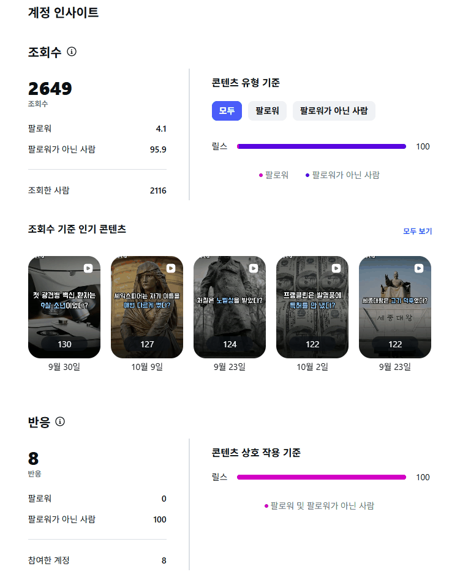

소재를 고르고, 영상과 이미지를 만들고, 정해진 시간에 올리고, 무엇을 올렸는지 기록하는 일을 매일 손으로 하지 않고 돌아가게 만드는 것이 목표였습니다.
정해진 시간에 릴스와 캐러셀을 자동으로 발행합니다.
같은 게시물이 두 번 올라가지 않아야 합니다.
발행 전에 콘텐츠의 사실과 음성을 검수합니다.
서버와 DB 없이 GitHub만으로 운영해 비용을 거의 들이지 않습니다.
시스템 구조
무거운 렌더는 로컬에서 미리 하고, GitHub Actions는 발행과 기록만 합니다.
핵심 설계 결정
렌더는 로컬, CI는 발행만. 영상과 이미지는 로컬에서 만들어 검수한 뒤 커밋합니다. 그래서 Actions 실행이 평균 20~30초로 끝나고 실패할 지점이 줄었습니다.
이미지는 GitHub raw URL. Instagram Graph API는 공개 URL을 요구합니다. 별도 스토리지 없이 저장소의 raw URL을 씁니다. 비밀값은 저장소가 아니라 Actions Secrets에만 둡니다.
상태는 한 곳에서.state/log.json을 발행 여부의 단일 진실 소스로 둡니다. 중요한 경우에는 인스타그램 API로 실제 상태를 다시 확인합니다.
진행 타임라인
노트 스타일 2장 캐러셀(커버와 내용)을 자동 발행하는 파이프라인으로 시작했습니다. 하루 3회 점검·발행, 큐가 비면 GitHub 이슈로 알리게 했습니다. 같은 내용을 무음 릴스로도 발행했습니다.
릴스 인사이트에서 평균 시청 시간이 약 4초로 나와, 6초 안에 시선을 잡는 전용 포맷으로 릴스를 다시 설계했습니다. 소재를 유명인·유명 관광지 쪽으로 바꿨습니다.
릴스를 검색창 UI 컨셉(질문 → 답변 카드)으로 전환했습니다. 스케줄을 슬롯 2시간 전부터 재시도하도록 바꿨습니다.
중복 발행 사고. 자동 발행을 즉시 멈추고 원인을 분석해 안전장치를 넣었습니다.
슬롯 창 겹침 버그를 찾아 고쳤습니다.
주제를 인물·위인의 의외의 사실로 바꿨습니다. 릴스를 Pixabay 사진과 ElevenLabs 나레이션으로 만들고, 같은 소재로 사진 3장 캐러셀도 함께 발행하기 시작했습니다.
소재를 40개로 늘린 뒤 선정 기준을 세워 27개로 정리했습니다. 나레이션 템플릿을 확정하고 음성 검수 기준을 0.93에서 0.97로 올렸습니다.
하루 2회 안팎으로 소재 27개를 발행해 10-10에 모두 소진했습니다. 이 기간에 크론 누락 사고가 있었습니다. 지금은 새 소재 28개를 웹 검색으로 다시 검증하고 대본을 쓰고 있습니다.
문제 해결
운영하면서 생긴 문제와 대응입니다.
API는 실패라고 했는데 실제로는 발행됨
중복 발행 사고 · 09-14
증상
같은 소재의 게시물이 두 번 올라갔습니다.
원인
Instagram media_publish가 오류를 반환했지만 실제로는 발행이 끝나 있었고, 재시도가 한 번 더 발행했습니다.
해결
발행 전에 API로 최근 게시물을 조회해 이미 올라갔는지 먼저 확인하는 멱등성 안전장치를 넣었습니다. 캡션 앞 60자로 중복을 판별합니다. 문제가 생기면 자동 발행을 즉시 끄고 진단하는 대응 절차도 정했습니다.
배운 점
외부 API의 실패 응답을 곧바로 실패로 믿지 않고 상태를 직접 조회해 확인합니다. 재시도에는 멱등성이 필요합니다.
크론이 늦거나 아예 돌지 않음
증상
GitHub 스케줄 크론은 1~7시간 늦게 도는 일이 흔합니다. 09-24에는 오후 2시 슬롯이 올라가지 않았습니다.
원인
Actions 실행 이력을 조회해 보니 12시, 13시, 14시 크론 3번이 한 번도 실행되지 않았습니다. 워크플로는 활성 상태였고 아침 슬롯은 정상이었습니다.
해결
슬롯마다 목표 2시간 전부터 1시간 간격으로 크론을 3번 걸고, 그 슬롯에 이미 발행했으면 나머지는 건너뜁니다. 처음에는 복잡한 다단계 재시도를 짰다가 이 단순한 방식으로 바꿨습니다. 누락 때는 수동 실행으로 바로 보충 발행하고 API로 실제 발행을 확인했으며, 외부 트리거도 열어 두었습니다.
배운 점
플랫폼 스케줄러도 정시 실행을 보장하지 않습니다. 모니터링과 보충 경로가 필요하고, 복잡한 재시도보다 단순한 구조가 낫습니다.
TTS로 만든 음성을 STT로 다시 받아 적어 원문과 유사도를 비교하고, 기준에 못 미치면 다시 만드는 루프가 있었지만 기준이 느슨했습니다. 연도 끊김은 띄어쓰기를 바꿔도 그대로였고, 실험해 보니 여러 자리 수를 어떤 단위로 쪼개 읽느냐가 원인이었습니다.
해결
유사도 기준을 0.93에서 0.97로 올리고 재시도를 5회에서 8회로 늘렸습니다. 비교 전에 숫자 읽기를 정규화하고, 8번 시도해도 못 읽는 낱말은 문장을 바꿔 피합니다. 숫자 표기 규칙을 정했고, STT 단어 타임스탬프로 숫자와 단위 사이의 무음 길이를 재는 진단 스크립트로 영상별로 점검합니다.
이미 아는 이야기와 사실 오류
증상
검증과 사진 가능 여부로만 소재를 골랐더니 이미 널리 알려진 이야기가 섞여 반응이 나빴습니다. 기억에 의존해 쓴 사실이 틀린 사례도 있었습니다(세종 소재에서, 신하가 권한 것이 아니라 태종의 유언).
해결
인물의 유명도가 아니라 그 사실이 이미 널리 알려졌는지를 먼저 보는 선정 기준을 문서로 만들었습니다. 이 기준으로 40개 중 13개를 반려해 27개로 정리했고, 반려 목록은 따로 보관합니다.
재발 방지
모든 소재에 출처와 검증 메모를 필수로 두고, 발행 전 웹 검색 재확인을 규칙으로 정했습니다. 새 후보 28개도 다시 검증해 근거가 약하거나 결론이 불분명한 소재를 걸렀습니다.
슬롯 창 겹침
09-15
증상
점심 슬롯 발행이 통째로 사라졌습니다.
원인
슬롯은 6시, 9시, 18시였는데 슬롯 판정 허용 오차(4.5시간)가 슬롯 간격(3시간)보다 커서 아침 발행이 점심 슬롯으로 잘못 집계됐습니다.
해결
슬롯을 06시, 12시, 18시로 6시간 이상 띄우고 점심 목표를 14시로 옮겼습니다. 슬롯 창끼리 겹치면 안 된다는 규칙을 문서로 남겼습니다.
발행한 소재가 큐에 남음
증상
이미 발행된 소재가 재작업 대상에 들어갔습니다.
원인
콘텐츠 뱅크에 발행이 끝난 소재가 남아 있었고, 확인 없이 대량 수정 대상에 포함됐습니다.
해결
뱅크에는 미발행 소재만 두고 state/log.json과 대조하는 규칙을 정했습니다. 강제 발행이 필요하면 순서를 바꾼 뒤 원격 저장소에 먼저 push하고 실행합니다. Actions는 원격 저장소를 새로 받아 오기 때문입니다.
운영 지표

인스타그램 계정 인사이트 캡처. 전체 기간 기준이며, 게시물은 2026-09-03부터 2026-10-10까지 올렸습니다.
집계 기간
전체 기간 (게시물 업로드 2026-09-03 ~ 2026-10-10)
조회수
2,649
조회 비중
팔로워 4.1%, 팔로워가 아닌 사람 95.9%
조회한 사람
2,116
반응
8
콘텐츠 유형
릴스 100%
상위 콘텐츠
조회수 130, 127, 124, 122, 122
AI 협업 방식
규칙을 쌓아 두기. 제가 지적한 사항(색, 자막 줄 수, 훅 형식, 숫자 표기, 검수 기준, 스케줄 규칙, 사고 대응 절차)을 바로 CLAUDE.md에 규칙으로 추가해 같은 실수가 반복되지 않게 했습니다.
대본은 위임하고 검수. 대본은 규칙, 검증된 사실, 길이 기준을 담은 프롬프트로 Claude Opus 서브에이전트에게 소재별로 맡겼습니다. 결과물은 제가 검수해 승인한 뒤에만 렌더했습니다.
만든 뒤 확인하고 보고. 렌더한 결과는 프레임, 길이, 음량, 음성 인식 일치도를 확인한 뒤 보고하게 했습니다.
AI(Claude)
구현
검증 보조
소재별 대본 초안(서브에이전트)
제가 한 일
기획
요구사항 정의
콘텐츠 기준 수립
결과물 검수와 피드백
운영과 장애 대응
기술 스택
Python
Pillow
ffmpeg
Instagram Graph API
ElevenLabs TTS·STT
Pixabay API
GitHub Actions
JSON
Pillow로 카드 이미지를, ffmpeg로 영상을 만듭니다. GitHub 저장소가 상태 저장소와 이미지 호스팅을 겸합니다.